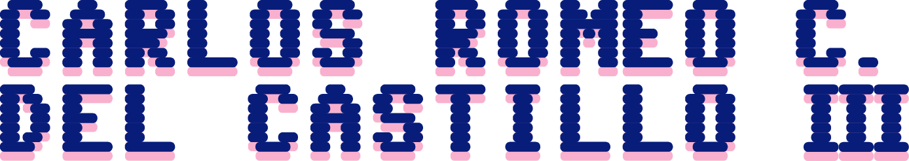

I, Carlos Romeo Clemente Del Castillo III, of BSIT-WebTech in the University of the Cordilleras, am running to be a Councillor in the College Student Council of the College of Information Technology and Computer Science.
I believe that a Student Council should actively contribute in making its home College a lively place that students look forward to studying and participating in.
I believe that no governing body is without its constituents and that engaging with them wherever possible is of paramount importance.
I believe, furthermore, especially as the College of IT and CS that we should lead the University in innovation, and to this end, that we should -- as much as possible, where applicable -- discard traditional methods of thinking and organising and be ready to accept both radical goals and radical means to achieve them.
I believe, finally, that the College Student Council would benefit greatly from having someone representative of these ideas and who is not afraid to take initiatives, to compromise, and to dissent to achieve them.
I am running because I believe in all of these ideas above. Below is the list of policies I will propose and support should I become a member of the College Student Council:
Whilst the Student Council has gone far to make themselves visible and proper -- and I do applaud their efforts -- there will always be room for improvement.
Any good governing body or organisation ought to have it and its effects visible and able to be felt. As a student of the College of Information Technology and Computer Science (CITCS), I have made the observation -- as have others -- that student organisation culture is in a crescent phase, with only a fraction of students even aware that student organisations and events exist in the college, and an even smaller sliver willing to join and participate in said organisations and events.
I myself was not aware of the influence the College Student Council (CSC) until very recently, and it is this that makes me wonder what can be done to resolve this issue. The size of this fraction of the College that are aware of student organisations and their events, in my opinion, is directly proportional to the visibility of the people running them. If we want to maximise student participation in events handled by the College Student Council (CSC), it is therefore needed that the visibility of the CSC itself be maximised.
To this end, I propose measures that will increase the visibility of the Student Council (CITCS-CSC) and of their activities:
Of course these measures alone will likely not be enough to drastically increase the CITCS-CSC visibility as is needed. I am open to other suggestions as to how this goal may be achieved, but I reiterate firmly that this goal is one that needs to be achieved.
The CITCS-CSC is a student organisation, and I believe that like any good student organisation it cannot work alone lest it become too absorbed in itself. It needs to have constant communication not only with its student constituents but also with its parent College and with other student organisations inside and outside the College.
To this end I will lobby for the creation of a multi-member Inter-organisational Relations Committee, or some other formal body as needed, within the CSC to handle the relations between the CITCS-CSC and other student organisations. Additionally, to encourage these kinds of relations, I will propose below events that will require cooperating with organisations outside the College.
I believe that cooperation with other student organisations will uplift the reputation not only of the CSC but of the entire College, and not only in the minds of the organisations we collaborate with, but in the minds of their constituents as well.
A properly organised student organisation ought to be organised especially in the way it communicates within itself. When the way an organisation talks within itself is properly maintained, plans can be executed more effectively, and the whole Council and the whole College benefits.
To this end, I will support measures that expand CSC internal communications beyond the single-groupchat model and eventually to a model that entirely will not depend on Facebook Messenger. I will also draft a plan to standardise and centralise CSC event planning, task management, and knowledge base management.
I will also lobby for the purchase of walkie-talkie communication devices -- or any device that facilitates immediate communciation between members -- that CSC members can use when they are spread thin and far between, especially during events.
To this end of keeping up a CSC that communicates well within itself, I pledge to try my absolute best to communicate and cooperate with all members where it is beneficial, even those outside any partylist I am in, and even those with whom I would normally hold grudges.
Whilst there is nothing inherently wrong with events focused on programming and technical skill, I believe that one of the reasons why we are not meeting expectations when it comes to attendance for these kinds of events is that students -- freshmen, especially -- see them as too technical in nature and thus way above their skill level. To resolve this I propose a series of less technical event ideas that are still relevant to the College:
I believe personally that some of the most important skills one can have -- not only as a programmer, but also as a member of society -- are the ability to explain and defend their viewpoints, and the ability to see the viewpoints of others.
And as one of CITCS's two representatives to the recent UC Intercollegiate Debate Championships (ICDC), I lament still what seems to be our collective lack of attention to this kind of intellectual exercise that only two people signed up for the event.
I believe that debates and intellectual exercises like these encourage critical thinking and communication, and in an age dominated by artificical intelligence programs that lure us into outsourcing our thought processes to them, I believe further that promoting these skills is and will always be of the utmost importance.
It is with this rationale that I propose the creation of the CITCS Debate Week, a series of Debate rounds using the British Parliamentary format whose topics and motions will focus on contemporary issues in the fields of Information Technology, Computer and Data Science, and Multimedia Arts.
Teams will debate each other in a similar manner to that of the ICDC, with two people in a team and four teams in a round, being shuffled around in a Round-Robin manner so that each team has ample chance to face all the others. For each round, teams will get points depending on how well they performed, subject to the adjudication of the debate judges, and the winning team will be that with the highest number of points after all the rounds had finished.
To minimise disruption of classes and to maximise attendance, I will propose that the event will be spread out over the course of the week, with each day having only one or two rounds, taking up one or two class periods.
I propose that the event, of course, be organised in conjunction with the UC Speech and Debate Society, and the cooperation of some CITCS Faculty can also be proposed if they would be interested. (I am not endorsed by the Speech and Debate Society, as it is a nonpartisan organisation and does not endorse candidates.)
I believe furthermore that one of the most important skills one can have as a CITCS student and as a student in general is the ability to present, explain, and defend one's ideas and projects in the face of any questions that will be thrown their way.
It has also been my observation that the art and act of presenting is something that is becoming lost on the population of the College, where the only way that dangerously large portion of the College knows to present themselves in front of an audience is to read verbatim from slides or from notes in a monotone manner and without engaging the audience.
It is clear then that some exercise to develop the presentation skills of the CITCS student must be drafted, one that allows them to have the thrill -- in a controlled manner -- of standing before an audience, without the academic pressure. It is for this that I propose the CITCS Presentation Workshop.
The CITCS Powerpoint Workshop will be a week-long event that will consist: first, of lectures on how to make a proper presentation or pitch deck; second, of lectures and practical exercises on how to speak and explain oneself properly in front of an audience; and finally, lectures on how to defend one's ideas on the spot, in front of a panel or audience.
At the beginning of the workshop, participants will be asked to draft a thesis, argument, or proposal -- which can be either academically relevant or otherwise -- that they will use for their final output for the workshop. By the end of the workshop, participants are expected to have created a pitch deck or presentation surrounding their topic, detailing the topic itself and the arguments for and against it.
The very final day of the workshop will be Defence Day. Participants will have to defend their topic and argument before a panel and audience, with the panel giving constant feedback, simulating how defences and presentations are structured in the academic and professional world.
As with the CITCS Debate Week, the event will ideally be spread across the week, with one part being held per day, to minimise class disruptions. I propose that this event be organised with either the Speech and Debate Society, the Language and Literature Society, or any other relevant organisation that other Councilmembers may see fit, as well as with the participation of a few willing CITCS faculty members. (Once again, I am not endorsed by any of these organisations due to their nonpartisan nature.)
I am endorsed by the Sinag Partylist:
I also endorse the following candidates to the University Student Council:
To solve the problems and issues faced by the College today, and to address the massive room for improvement that the College has, there is a need for a Student Council unafraid to eschew traditional ideas and aggressively increase its visibility among its constituents.
For too long I have strayed away from running for a position in the Council as I fear it was going to be too much work, especially when I was a freshman. But now I sense in the air a need for a change in direction. And now that the clarion call sounds and calls for the next generation of leaders, I raise my hand.